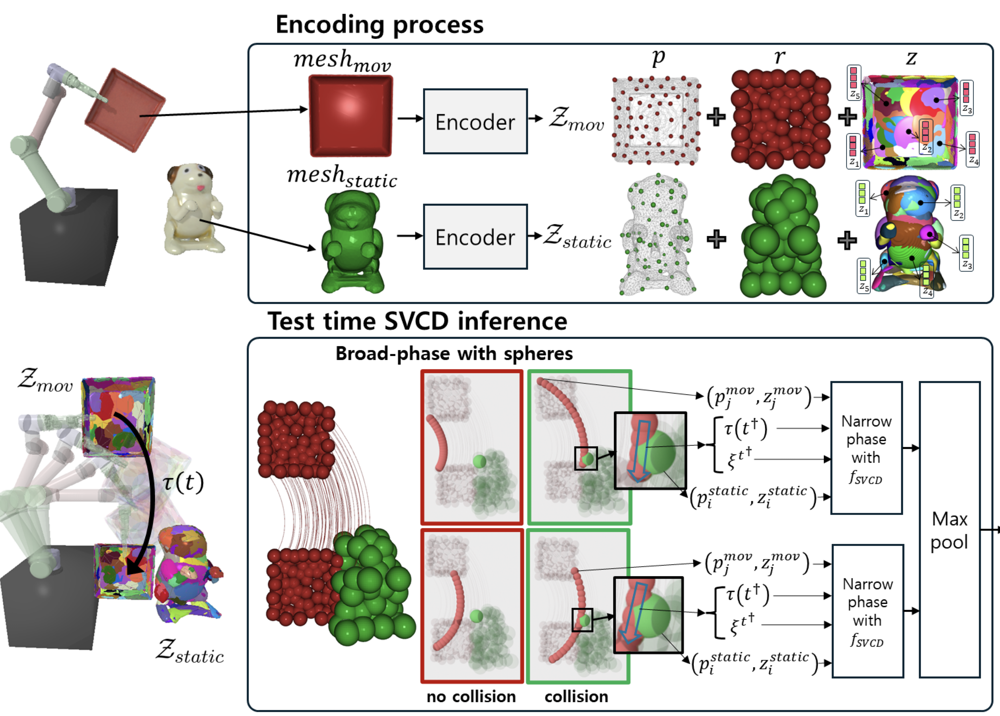

Robot manipulation in unstructured environments requires efficient and reliable Swept Volume Collision Detection (SVCD) for safe motion planning. Traditional discrete methods potentially miss collisions between these points, whereas SVCD continuously checks for collisions along the entire trajectory. Existing SVCD methods typically face a trade-off between efficiency and accuracy, limiting practical use. In this paper, we introduce NeuralSVCD, a novel neural encoder-decoder architecture tailored to overcome this trade-off. Our approach leverages shape locality and temporal locality through distributed geometric representations and temporal optimization. This enhances computational efficiency without sacrificing accuracy. Comprehensive experiments show that NeuralSVCD consistently outperforms existing state-of-the-art SVCD methods in terms of both collision detection accuracy and computational efficiency, demonstrating its robust applicability across diverse robotic manipulation scenarios.
NeuralSVCD is a SVCD(Swept Volume Collision Detection) algorithm which uses a novel geometric representation designed to leverage shape locality and temporal locality, which has 24 times speed-up over sphere-based GPU methods (collision detector from cuRobo) and more than a 100 times speed-up over mesh-based GJK (collision detector from TrajOpt) —while simultaneously improving accuracy by ≈ 5~15 % even with the shapes unseen during. Our method consists of three stages: object encoding, broad phase, and narrow phase.
